Pour les équipes qui exploitent SUSE Harvester HCI
Une console moderne pour tous vos clusters Harvester
harvester-ops réunit tous vos clusters dans une seule interface, transforme les opérations longues en un geste suivi, et conserve la trace de tout ce qui se passe, depuis votre console ou depuis n'importe où ailleurs.
Open source. Prêt pour l'air gap. Cinq langues. v1.86.0
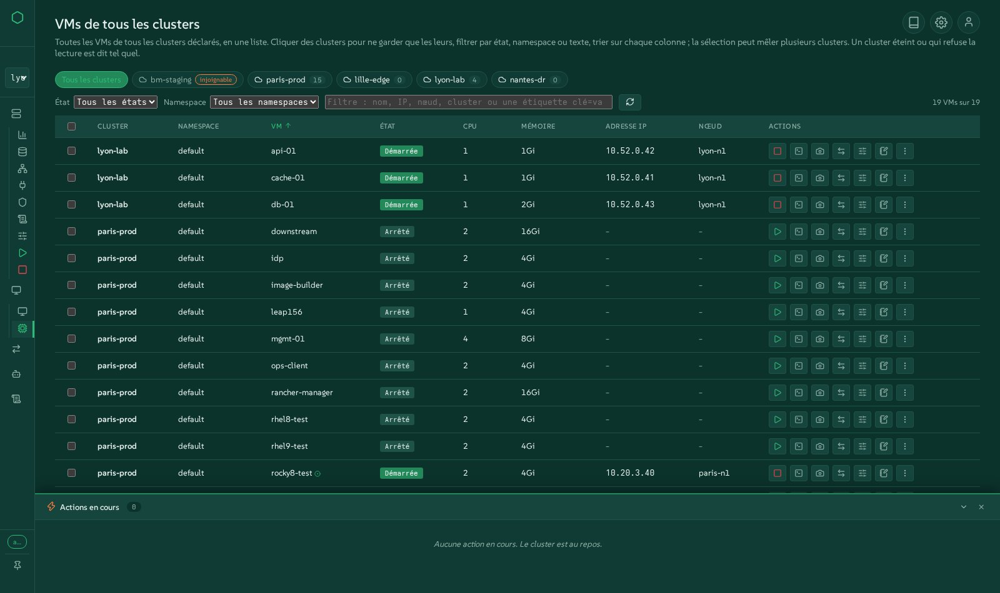
Tous vos clusters, une seule interface
Déclarez autant de clusters Harvester que vous en exploitez. Basculez en un clic, listez toutes les VM de tous les clusters dans un seul tableau, voyez quel cluster est éteint ou vous refuse l'accès, sans que les autres attendent.
Une automatisation simplifiée
Arrêt et démarrage gracieux, mises à jour, migrations VMware à chaud, clusters Kubernetes, installations bare-metal, Terraform : les opérations longues deviennent un seul geste, avec les mêmes scripts derrière le bouton et la ligne de commande.
Chaque événement suivi
Chaque action s'exécute comme une tâche suivie avec des étapes en direct, des journaux et un historique. Les changements effectués hors de la console, dans Harvester, kubectl ou Rancher, apparaissent aussi.
Voyez-la vivre, dans votre navigateur
La démo est l'interface réelle de cette version, exécutée sur des clusters simulés : cinq clusters, des VM à démarrer et arrêter, des migrations VMware en cours, un dock d'actions qui bouge. Chaque geste fonctionne et rien n'est modifié.
Tout ce que fait harvester-ops
Regroupé comme les opérateurs pensent leur travail. Chaque famille renvoie vers l'écran de démo où vous pouvez l'essayer.
Tous vos clusters au même endroit
Une seule console pour une flotte de clusters Harvester, physiques ou imbriqués, proches ou distants.
- Déclarez les clusters depuis l'interface ou le fichier de configuration ; changer de cluster change vraiment chaque vue.
- Toutes les VM des clusters : chaque VM de chaque cluster dans un seul tableau, filtré par cluster, état, namespace ou texte, trié sur n'importe quelle colonne, avec démarrage, arrêt, redémarrage, migration et le menu d'actions complet sur une sélection qui traverse les clusters.
- Les clusters éteints ou inaccessibles sont signalés comme tels, instantanément, au lieu de figer la page.
- Les migrations de tous les clusters dans un seul tableau ou sur une chronologie partagée.
- Des notes sur les clusters, les nœuds et les VM, conservées par la console.
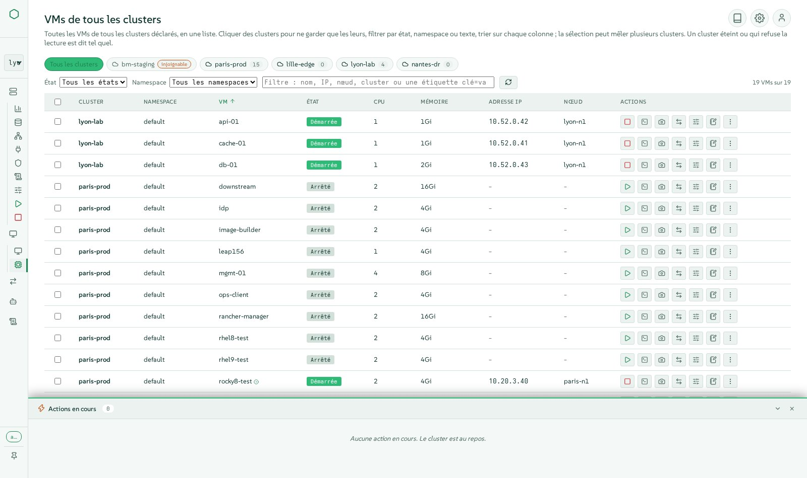
Machines virtuelles, comme dans Harvester et plus encore
Tout ce que Harvester propose sur une VM, dans des fenêtres modernes qui restent ouvertes côte à côte.
- Créez des VM avec images, modèles, cloud-init, réseaux, disques et placement, vérifiés par rapport à l'espace réellement allouable.
- Le menu d'actions complet : démarrer, arrêter, redémarrer, mettre en pause, redémarrage logiciel, cloner, transformer en modèle, YAML, sauvegardes, snapshots, suppression avec ses volumes.
- Modifications à chaud : ajout à chaud de CPU et de mémoire, CD-ROM, cartes réseau, migration de stockage, identifiants d'accès.
- Une console VNC que plusieurs personnes peuvent partager à la fois, avec un clavier compatible AZERTY, et une console série.
- Snapshots, sauvegardes, restaurations et leurs planifications ; migration à chaud entre nœuds.
- Déplacez une VM vers un autre cluster, exportez-la en archive, importez-la ailleurs, avec débit, temps restant et contrôle de la vitesse.
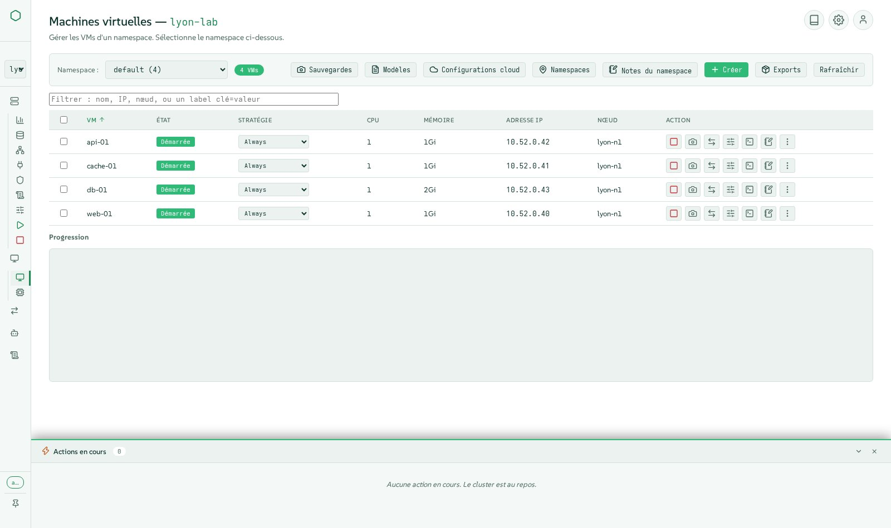
Voir le cluster tel qu'il est construit
Des vues tirées du cluster en direct, un bloc par objet, dans l'esprit des outils VMware.
- Vue d'ensemble avec métriques, carte du cluster des nœuds et des VM, événements et jauges d'usage.
- Cartes de fabrique, de réseau et de stockage : un bloc par switch, réseau, volume et disque.
- Le chemin réseau d'une VM, de sa carte jusqu'au port physique.
- Les hôtes comme dans Harvester : disques, tags, huge pages, KSM, gestionnaire de CPU, gestion hors bande via harvester-seeder, mode maintenance avec suivi du drain en direct.
- Namespaces, projets Rancher, quotas et membres.
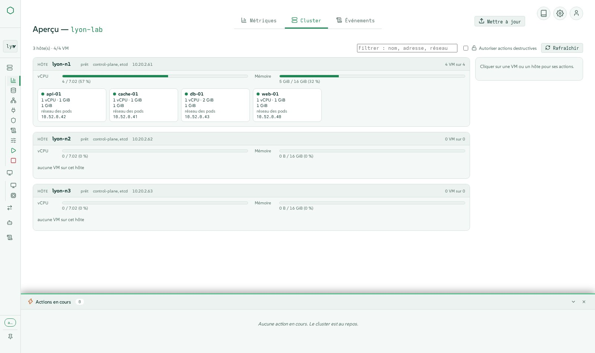
Un stockage auquel vous pouvez faire confiance
Longhorn et les images, expliqués plutôt que simplement listés.
- Volumes, images, classes de stockage (y compris chiffrées), snapshots et sauvegardes, avec création, modification et suppression en fenêtres.
- Volumes dégradés expliqués et corrigés en toute sécurité : répliques manquantes, répliques non placées, reconstructions en cours.
- Espace allouable calculé comme Longhorn le décide, pour qu'une VM ne soit jamais planifiée là où elle ne peut pas tenir.
- Stockage LVM et téléchargements d'images CDI là où Harvester les prend en charge.
- Réglages de la cible de sauvegarde et paquets de support.
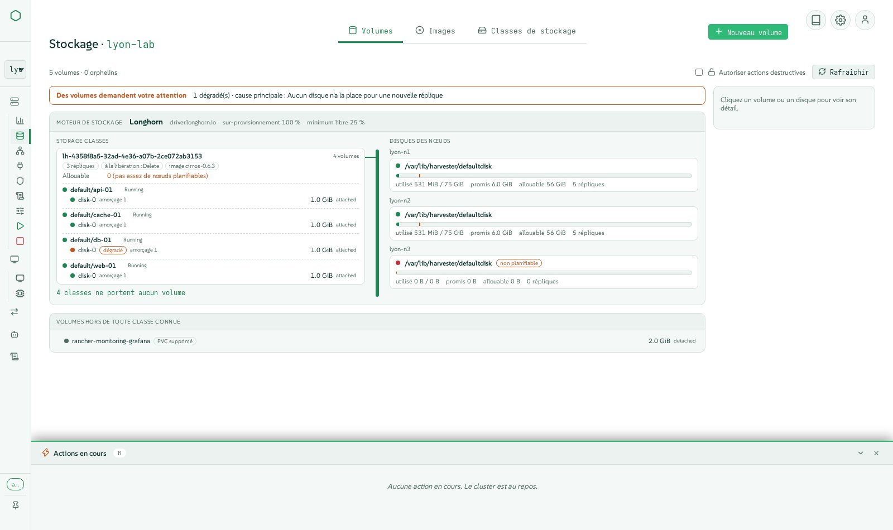
Réseaux, overlay et underlay
Des réseaux de VM aux VPC kube-ovn, avec des formulaires et un schéma en direct.
- Réseaux de VM, réseaux de cluster et leurs configurations, équilibreurs de charge et pools d'IP, réseaux d'hôte.
- Réseaux de stockage, de migration et RWX réglés au même endroit.
- kube-ovn : VPC, sous-réseaux, passerelles NAT, réseaux fournisseurs, politiques réseau, santé.
- IP statiques appliquées pour de vrai sur les réseaux overlay.
- Périphériques PCI, USB et SR-IOV transmis en passthrough aux VM.
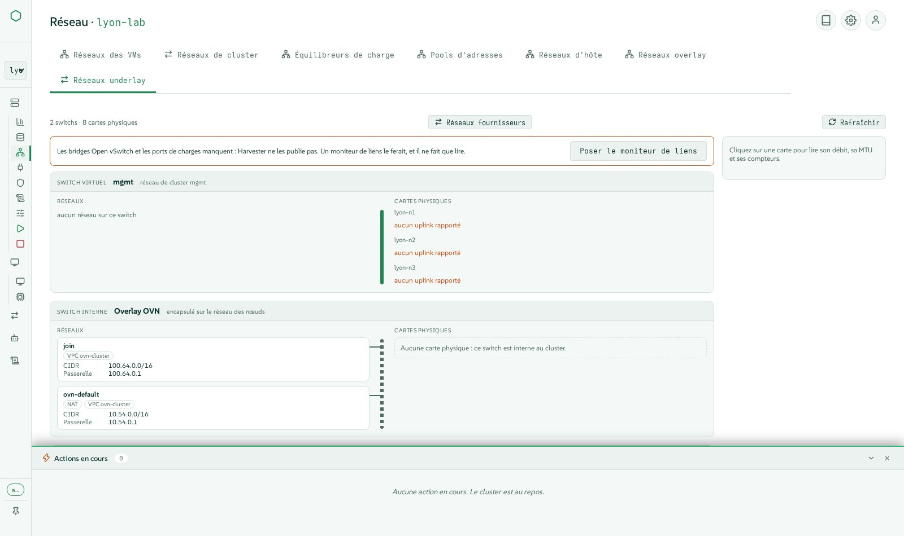
Quitter VMware, à chaud et en toute visibilité
Des dizaines de VM déplacées de vCenter vers Harvester avec Forklift, avec la bascule la plus courte possible.
- Forklift installé pour vous, avec son image VDDK construite et poussée vers votre registre.
- Sources vCenter déclarées, inventaire parcouru, vagues composées avec les correspondances réseau et stockage.
- Migration à chaud : copies incrémentales pendant que la VM continue de tourner, puis une bascule planifiée ou immédiate.
- Vagues affichées en blocs ou en couloirs sur une chronologie, pour tous les clusters.
- Retour à la source, qui indique quand VMware arrête la source sur une question posée, et des vérifications qui refusent une vague dont l'adresse MAC est déjà prise.
- Imports de VM depuis VMware, OpenStack ou une archive OVA.
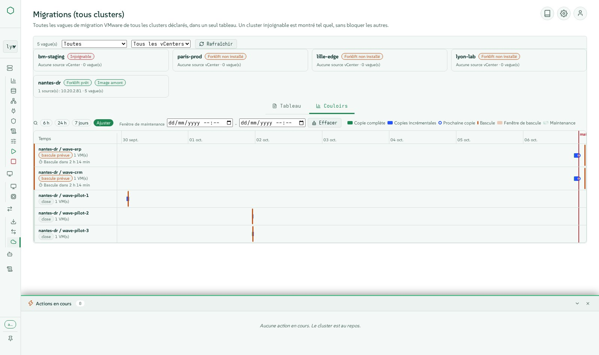
Le cycle de vie du cluster sans le stress
Les opérations que personne ne veut faire à la main à 2 h du matin.
- Arrêt gracieux en huit étapes ordonnées : vérifications préalables, snapshot etcd, snapshots de VM, arrêt ordonné des VM, maintenance du stockage, mise en cordon, workers, plan de contrôle.
- Démarrage en cinq étapes, Wake-on-LAN inclus, ne redémarrant que les VM que l'arrêt avait stoppées, dans leurs groupes et leur ordre.
- Des groupes de VM qui s'arrêtent et démarrent en séquence entre les groupes et en parallèle à l'intérieur d'un groupe.
- Mises à jour de Harvester depuis l'interface, avec une image ISO air gap en l'absence d'internet.
- Maintenance des nœuds avec le drain suivi en direct et les blocages expliqués.
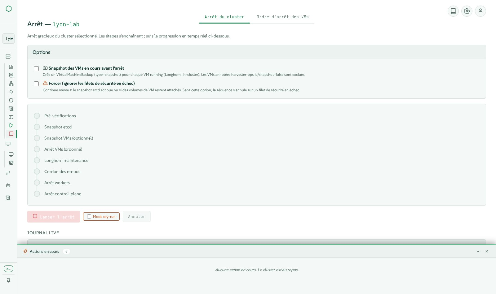
Infrastructure as code et bare metal
Des serveurs vides aux clusters Kubernetes, depuis une seule console.
- Installations bare-metal de Harvester via les médias virtuels Redfish : découverte, disques et pools, profils multi-nœuds, installations par lots, le cluster se déclarant lui-même.
- Clusters Kubernetes (RKE2) créés sur Harvester avec Cluster API, avec des services équilibrés via CAAPH et kube-vip.
- Déclarations Terraform conservées par la console, un état chacune, le plan lu avant application ; OpenTofu et le provider Harvester embarqués.
- Monitoring et logging : métriques Prometheus, règles d'alerte, flux et sorties de logs, avec les vérifications de configuration que Harvester laisse silencieuses.
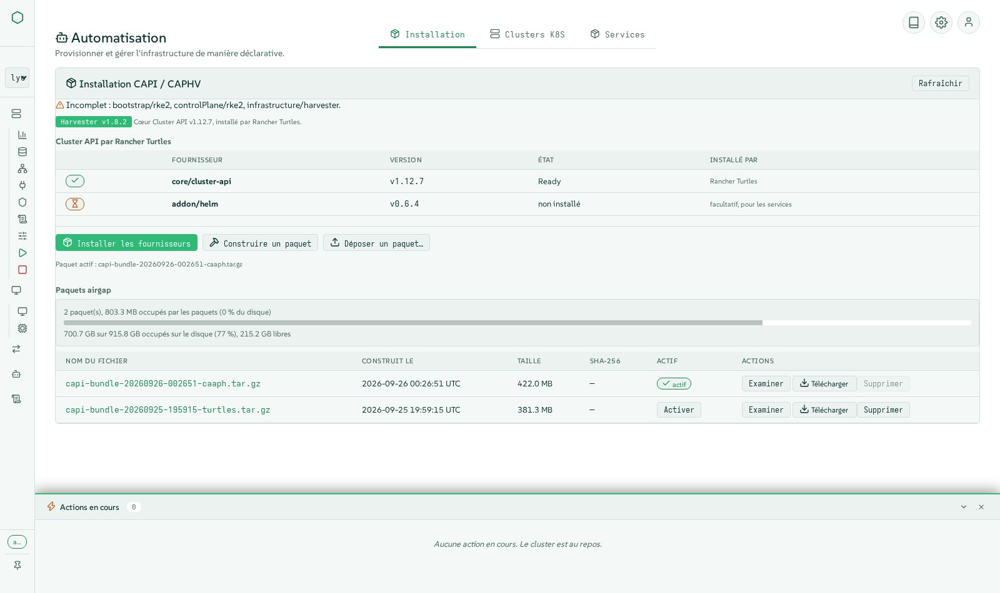
Chaque action suivie, chaque événement visible
Savoir ce qui s'est passé, qui l'a fait et comment ça s'est terminé.
- Chaque geste est une action suivie avec des étapes en direct dans le dock d'actions, puis des journaux et un historique dans l'onglet Activity.
- Les changements effectués hors de la console (interface Harvester, kubectl, Rancher) sont aussi détectés et listés.
- Activité filtrée par cluster, statut et texte ; un historique durable des dernières exécutions avec leurs journaux.
- Événements du cluster et usage sur la vue d'ensemble ; ce que le cluster vous a refusé est annoncé au lieu d'une vue vide.
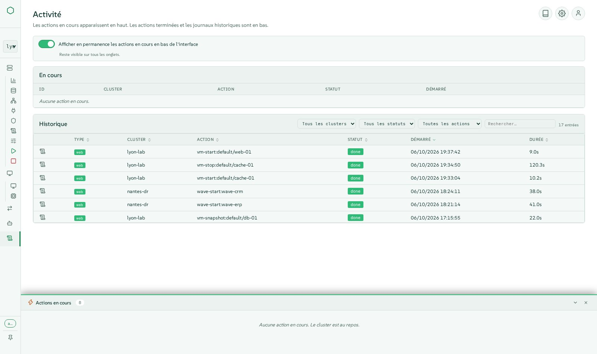
Sécurisé par défaut
Conçu pour des équipes de production, avec le moindre privilège partout.
- La connexion est obligatoire, avec des comptes et des rôles de console (lecteur, opérateur, administrateur).
- Authentification unique via Rancher : les actions s'exécutent avec les droits Rancher propres à la personne, jamais avec un compte admin partagé.
- Identité déléguée au cluster par usurpation Kubernetes (impersonation), pour que le RBAC du cluster s'applique à chaque personne.
- Limitation de débit, entrées validées, kubeconfigs à portée restreinte, secrets jamais révélés.
- Secrets et clés SSH du cluster gérés dans des formulaires typés.
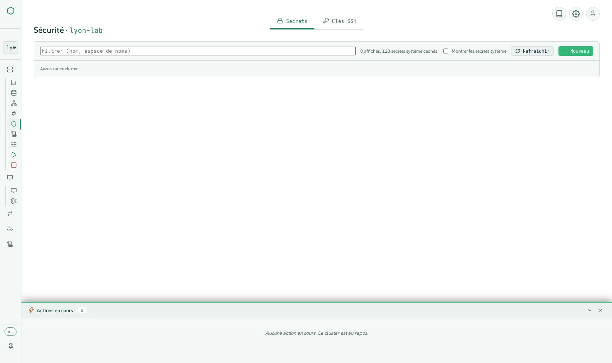
Prêt pour la production, même hors ligne
Une archive signée qui s'installe et se met à jour seule, sans internet.
- Une archive tar signée unique avec l'image du conteneur, le paquet Cluster API, OpenTofu et le provider Terraform : prête à l'emploi sur un site air gap.
- Mises à jour depuis l'interface, en ligne ou depuis une archive envoyée, signature vérifiée, retour arrière automatique si la nouvelle version ne répond pas.
- Pensé pour de grandes flottes : lectures partagées et processus de travail, 60 clusters pour environ quatre cœurs de CPU.
- Cinq langues (anglais, français, allemand, espagnol, italien), cinq thèmes clair et sombre, bulles d'aide partout, navigable au clavier.
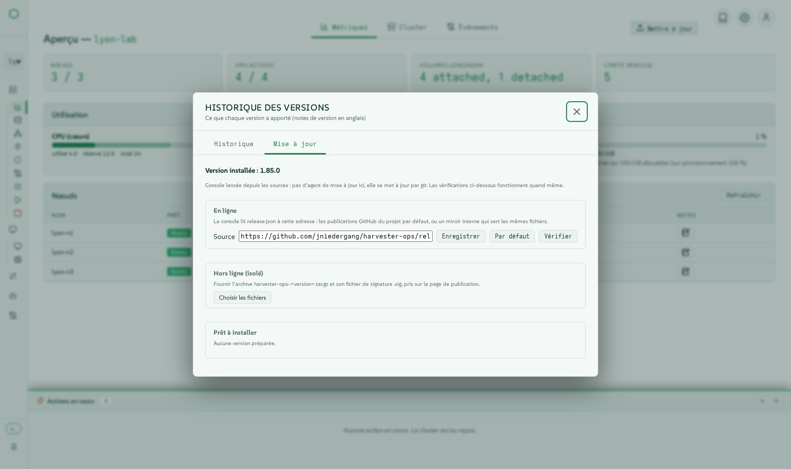
Au moins tout ce que fait l'interface de Harvester
Chaque menu de harvester-ops offre au moins les fonctions de l'interface Harvester 1.9, avec une expérience moderne en plus. Un tableau de parité fonction par fonction est publié à chaque version.
Lire le tableau de paritéSous le capot
Une pile petite et auditable : pas de framework JavaScript, pas de téléchargement à l'exécution, chaque action un script que vous pouvez lancer vous-même.
Architecture
Navigateur
Modules JavaScript natifs (vanilla), Server-Sent Events pour les étapes en direct, WebSockets pour les consoles.
Console
Application Flask servant l'interface et une API REST, avec connexion, rôles, limitation de débit et un moteur d'actions (SQLite en mode WAL).
Scripts
Chaque opération est un script bash ou Python sous bin/, exécuté par la console comme une action suivie et utilisable seul depuis la ligne de commande.
Clusters
Lus directement via l'API Kubernetes (connexions mutualisées, lectures partagées, processus de travail) ou kubectl ; agit avec l'identité de la personne.
Principes de conception
- La ligne de commande et l'interface sont égales : l'interface ne contourne jamais les scripts.
- Chaque geste qui modifie l'état est une action suivie, visible en direct et conservée dans l'historique.
- Air gap d'abord : aucun accès réseau nécessaire à l'exécution, tout est livré dans l'archive.
- Moindre privilège : le cluster voit la personne, pas la console.
- Testé pour de vrai sur des clusters Harvester avant chaque version, pas seulement en tests unitaires.
Technologies et versions
Lues depuis la version elle-même au moment où cette page a été construite. (v1.86.0)
Exécution
| Composant | Version | Rôle |
|---|---|---|
| Python | 3.11 | langage de la console et de ses outils |
| SUSE BCI Python image | registry.suse.com/bci/python:3.11 | base de l’image conteneur |
| SQLite | WAL | historique des actions et notes, sans serveur de base de données |
Bibliothèques Python
| Composant | Version | Rôle |
|---|---|---|
| bcrypt | 3.2.2 | calcul des empreintes de mots de passe |
| flask | 3.0.3 | framework web de la console |
| flask-limiter | 4.1.1 | limites de débit sur chaque point d’entrée qui modifie |
| flask-sock | 0.7.0 | WebSockets des consoles VNC et série |
| itsdangerous | 2.2.0 | cookies de session signés |
| jinja2 | 3.1.6 | modèles de pages |
| markdown | 3.6 | rendu des notes de version et de la documentation |
| passlib | 1.7.4 | empreintes des mots de passe des comptes de la console |
| prometheus-client | 0.25.0 | point d’exposition des métriques |
| pyyaml | 6.0.2 | configuration et manifestes Kubernetes |
| werkzeug | 3.1.8 | boîte à outils WSGI sous Flask |
| y-py | 0.6.2 | édition partagée des notes |
Bibliothèques navigateur embarquées
| Composant | Version | Rôle |
|---|---|---|
| Lucide icons | 1.44.0 | le jeu d’icônes monochromes |
| xterm.js | 5.5.0 | console série des VMs |
| noVNC | 1.7.0 | console graphique des VMs, partagée entre plusieurs personnes |
| Tiptap | embedded | notes en texte riche |
| Yjs | 13.6.20 | notes partagées en temps réel |
Outils dans l'image
| Composant | Version | Rôle |
|---|---|---|
| kubectl | v1.30.5 | client Kubernetes, en secours des lectures directes de l’API |
| yq | v4.44.3 | traitement YAML dans les scripts |
| OpenTofu | 1.12.6 | applique les déclarations Terraform (MPL-2.0) |
| xorriso | openSUSE package | remasterisation de l’ISO Harvester pour le bare metal |
| OpenSSH client | openSUSE package | accès aux nœuds pour l’arrêt et le démarrage |
| terraform-provider-harvester | 1.9.0 | ressources Harvester des déclarations Terraform |
Paquet Cluster API
| Composant | Version | Rôle |
|---|---|---|
| cluster-api | v1.10.4 | composant Cluster API |
| cabp-rke2 | v0.16.1 | composant Cluster API |
| cacp-rke2 | v0.16.1 | composant Cluster API |
| caphv | v0.2.8 | composant Cluster API |
| cert-manager | v1.16.2 | composant Cluster API |
| caphv-clusterclass | v0.2.8 | composant Cluster API |
| turtles-rke2-bootstrap | v0.25.2 | composant Cluster API |
| turtles-rke2-control-plane | v0.25.2 | composant Cluster API |
| turtles-caphv | v0.10.1 | composant Cluster API |
| turtles-caaph | v0.6.4 | composant Cluster API |
Harvester
| Composant | Version | Rôle |
|---|---|---|
| Harvester HCI | v1.7.x, v1.8.x, v1.9.x | clusters pilotés (testés en réel en v1.8 et v1.9) |
| Forklift | v1.8.2 images | migrations VMware à chaud |
| Rancher | 2.14 | connexion unique et droits hérités (fournisseur OIDC) |
Installez-le en quelques minutes
Téléchargez l'archive signée depuis les releases GitHub, vérifiez-la, lancez l'installeur. Il pose les quelques questions nécessaires, y compris vos propres certificats si vous le souhaitez.
- 1Téléchargez la version et sa signature
- 2Vérifiez la somme de contrôle
- 3Lancez l'installeur en root
- 4Ouvrez la console et connectez-vous
V=1.86.0
curl -LO https://github.com/jniedergang/harvester-ops/releases/download/v$V/harvester-ops-$V.tar.gz
curl -LO https://github.com/jniedergang/harvester-ops/releases/download/v$V/harvester-ops-$V.tar.gz.sha256
curl -LO https://github.com/jniedergang/harvester-ops/releases/download/v$V/harvester-ops-$V.tar.gz.sig
sha256sum -c harvester-ops-$V.tar.gz.sha256
tar xzf harvester-ops-$V.tar.gz && cd harvester-ops-$V
sudo ./install.shNécessite un hôte Linux avec Podman et systemd, et un accès à l'API Kubernetes de vos clusters.
Regardez-le fonctionner
De courts clips sous-titrés filmés sur des clusters réels, en anglais et en français.
Voir les vidéos sur GitHub